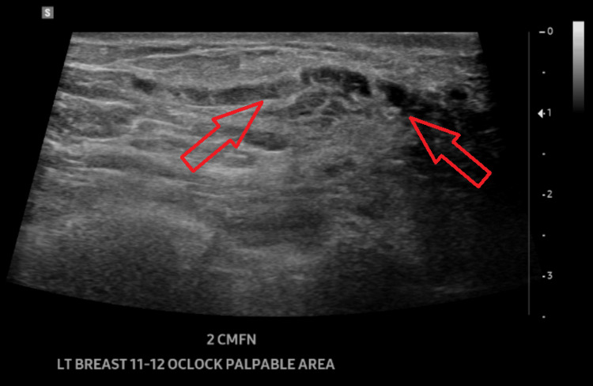
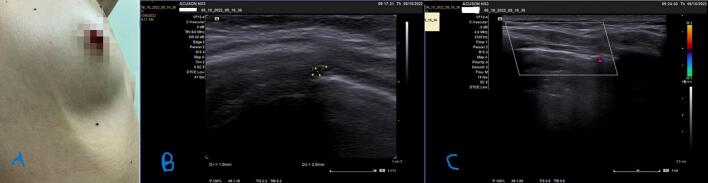
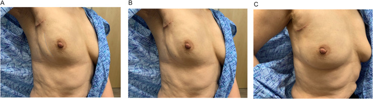
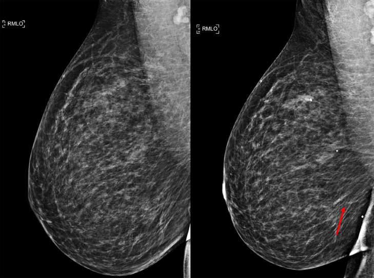
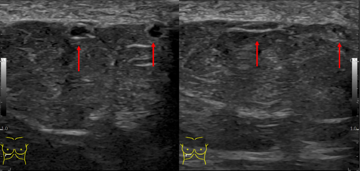

1691 — Bệnh Mondor: huyết khối tĩnh mạch nông vú – thành ngực / Mondor disease (superficial thrombophlebitis of the breast and chest wall)
Tags: pattern:day-cung-duoi-da pattern:huyet-khoi-tinh-mach-nong pattern:day-da pattern:lot-da vung:vu vung:thanh-nguc score:BI-RADS protocol:sieu-am-mach-nong protocol:nhu-anh protocol:Doppler-mau incidentaloma:day-cung-thanh-nguc
Mức chắc chắn (certainty): tổng hợp y văn (literature synthesis) — số liệu đọc trực tiếp từ toàn văn 4 bài mở qua Europe PMC (Radiology Case Reports 2025, International Journal of Surgery Case Reports 2024, Advances in Radiation Oncology 2023, Cureus 2026) + 1 tổng quan về huyết khối tĩnh mạch nông (J Clin Med 2026); có ca nguyên văn cho quiz.
1. Tổng quan — "dây cứng" hình thành thế nào và vì sao siêu âm là chốt
- Định nghĩa: Mondor là viêm–huyết khối tĩnh mạch NÔNG dưới da ở vú/thành ngực (thường là tĩnh mạch ngực–bụng hoặc tĩnh mạch ngực bên), mô tả lần đầu bởi Henri Mondor 1939. Đây là tĩnh mạch nông, không phải huyết khối tĩnh mạch sâu và không phải viêm mô tế bào.
- Sinh lý bệnh (vì sao thành "dây"): huyết khối lấp lòng mạch + viêm quanh tĩnh mạch (periphlebitis) + xơ hóa → mạch cứng, dính vào mô dưới da thành dây (cord) sờ rõ; sau đó tái thông (recanalization) hoặc xơ hóa tắc dần → dây mềm và biến mất. Một số ít ca được cho là viêm bạch mạch chứ không phải tĩnh mạch.
- Vì sao da trên dây bị LÕM/kéo (dimpling): dây xơ dính vào dây chằng Cooper → rút da vào trong, tạo dấu lõm khu trú — đây chính là lý do Mondor bị nhầm với ung thư vú có co kéo da (đặc biệt thể viêm/di căn da).
- Tần suất (định lượng): ca có triệu chứng ước tính 0,5–0,8%, nói chung < 1%; tại một phòng khám vú, 0,94% (7/748) bệnh nhân tự đến khám; y văn chỉ có khoảng 400 ca được báo cáo. 50–60% vô căn; phần còn lại sau chấn thương/áo ngực chật/vận động mạnh, phẫu thuật – sinh thiết – đặt kim, tăng đông, và ung thư vú (tới 12,7%).
- Dịch tễ: nữ gấp 3 lần nam; tuổi hay gặp 30–60, đỉnh ~43 tuổi trong một loạt tổng quan.
- Diễn tiến tự nhiên: tự khỏi 4–8 tuần (một số nguồn 4–6 tuần; ca nguyên văn hết hoàn toàn trên siêu âm ở 12 tuần). Kháng đông KHÔNG dùng thường quy — chỉ khi có DVT/PE kèm theo hoặc nguy cơ cao.
- TẠI SAO siêu âm là chốt (vật lý): huyết khối + tế bào viêm lấp lòng mạch làm lòng mạch KHÔNG xẹp khi ép (khác tĩnh mạch bình thường xẹp hoàn toàn), trong lòng có hồi âm (thrombus), và không có dòng trên Doppler màu. Đo được đường kính và chiều dài huyết khối, và theo dõi theo tuần: ca được đo 1,0 và 2,0 mm → 0,7 mm sau 14 ngày. Trên nhũ ảnh, huyết khối chỉ hiện thành đường đậm/tubular density hoặc bất đối xứng tuyến tính nông — dễ bị chấm BI-RADS 4 oan.
- Bối cảnh quan trọng — huyết khối tĩnh mạch nông KHÔNG do giãn tĩnh mạch (non-varicose SVT): đây là nhóm gần với huyết khối tĩnh mạch sâu hơn: DVT đồng thời 24,6%, PE 4,7%; tỷ lệ tăng đông tới 76% trong một số loạt; không có giãn tĩnh mạch là yếu tố nguy cơ độc lập cho biến cố huyết khối HR 2,06 ở 3 tháng. Vì vậy Mondor không đồng nghĩa "luôn lành, không cần làm gì".
2. Mẫu hình + chẩn đoán phân biệt theo vị trí (Gamut)
- Khuôn 1 — Dây cứng dọc thành ngực/vú, da trên dây lõm nhẹ, đau khi giơ tay. Gamut: Mondor vs ung thư vú thể viêm/da cam vs viêm mô tế bào vs viêm bạch mạch vs di căn da dạng dây. Chốt: cấu trúc dạng ống không xẹp, không có dòng — không phải mảng da dày lan tỏa.
- Khuôn 2 — "Dây" ở nách/chi trên sau mổ nách, xạ trị, hoặc tự phát. Gamut: hội chứng dây nách (axillary web syndrome, AWS) vs Mondor vs phù bạch mạch chi trên (BCRL) vs huyết khối tĩnh mạch nông do catheter. AWS gặp 48,3% – tới 72% sau mổ hạch nách; dây nhiều sợi, chạy từ nách xuống cánh tay, cải thiện khi vận động; hai bệnh có thể cùng tồn tại.
- Khuôn 3 — Dây xuất hiện sau sinh thiết/kim/mổ ngực. Gamut: Mondor sau thủ thuật vs tụ máu vs nhiễm trùng vết mổ vs huyết thanh tụ. Chốt: dây dọc theo đường tĩnh mạch, không phải khối; xuất hiện ~7 tuần sau sinh thiết trong ca nguyên văn.
- Khuôn 4 — Nhiều dây, tái phát, hoặc hai bên. Gamut: tăng đông (yếu tố V Leiden, protein S/C, APS) vs ung thư ẩn vs bệnh viêm hệ thống vs thrombophlebitis migrans (Trousseau). Chốt: không tìm được nguyên nhân cục bộ → tầm soát tăng đông + tầm soát ung thư, không chỉ theo dõi.
- Khuôn 5 — Dây ở vị trí khác (dương vật, bụng, chi). Cùng cơ chế, khác vị trí; Mondor dương vật thường sau giao hợp/thắt chặt, cũng tự khỏi.
- Gợi nhớ "CORD": Cord (dây cứng dọc) · One side – một bên, một dây · Resolution 4–8 tuần · Doppler: không dòng, không xẹp.
3. Bảng so sánh phân biệt (ma trận đối chiếu)
| Thực thể (entity) | Hình ảnh điển hình (SA / nhũ ảnh / MRI) | Chốt vào (rule-in) | Chốt loại (rule-out) | Gợi ý xác nhận |
|---|---|---|---|---|
| Mondor (huyết khối TM nông) | SA: cấu trúc dạng ống dưới da, không xẹp khi ép, lòng có hồi âm, không dòng Doppler; đo được đường kính 1–2 mm, dài vài cm. Nhũ ảnh: đường đậm/tubular density nông, có thể bất đối xứng tuyến tính; thường không có vi vôi hóa | Dây cứng + ống không xẹp, không dòng | Mảng da dày lan tỏa + không thấy ống → nghĩ IBC/viêm; khối đặc → không phải Mondor | SA đầu dò thẳng tần số cao + Doppler màu; đo đường kính/chiều dài; theo dõi 4–8 tuần |
| AWS (dây nách) | Dây nhiều sợi từ nách xuống cánh tay, giới hạn động tác; SA có thể thấy tĩnh mạch/bạch mạch nông | Sau mổ hạch nách + nhiều dây + cải thiện với vật lý trị liệu | Một dây đơn độc dọc thành ngực, không liên quan mổ → nghĩ Mondor | Khám lâm sàng + SA; điều trị bảo tồn |
| Viêm mô tế bào / áp-xe vú | Dày da lan tỏa, tăng sinh mạch, có thể ổ dịch; sốt, đau, nóng đỏ | Sốt + bạch cầu tăng + ổ dịch/khí | Không sốt, chỉ một dây cứng → không phải nhiễm | SA + lâm sàng; dẫn lưu nếu có ổ |
| Ung thư vú thể viêm (T4d) | Da cam, dày da lan tỏa > 1/3 vú, mạch bạch huyết giãn; có thể có khối | Da cam lan rộng + dày da lan tỏa + sinh thiết da có tế bào u | Chỉ một dây khu trú, da ngoài dây bình thường → không phải IBC | Punch da + nhũ ảnh/MRI (bài 1616) |
| Viêm bạch mạch | Đường đỏ nóng, đau, lan nhanh, thường có ổ nhiễm vào | Sốt + đường đỏ lan + ổ nhiễm nguyên phát | Dây cứng không đỏ nóng lan → Mondor | Lâm sàng; kháng sinh |
| Huyết khối nông do catheter/kim | Ống không xẹp tại đúng vị trí kim/catheter, có tiền sử đặt | Vị trí trùng điểm chọc + không dòng | Không có can thiệp tại chỗ → nguyên phát | SA tại chỗ + đánh giá catheter |

Cấu trúc dạng ống (mũi tên đỏ) chạy trong mô dưới da, thô dần về phía núm, lòng chứa vật liệu hồi âm — hình thái kinh điển của tĩnh mạch nông huyết khối. Nguồn: Escudero IA, Cureus 2026, Fig. 1 (CC BY 4.0).4. Protocol chụp + theo dõi
Khi bệnh nhân có "dây cứng" ở vú/thành ngực:
- Siêu âm là bước đầu tiên (đầu dò thẳng 12–18 MHz): quét dọc theo dây và cắt ngang, ép nhẹ để xem xẹp; bật Doppler màu/công suất. Ghi: đường kính (mm), chiều dài, khoảng cách tới núm, có/không dòng, có huyết khối trong lòng.
- Nhũ ảnh chẩn đoán hai bên (không chỉ "chụp vùng dây") để loại trừ ung thư nền — vì tới 12,7% ca Mondor có ung thư vú; nhũ ảnh trong ca nguyên văn âm tính.
- MRI vú không thường quy; dùng khi nhũ ảnh/SA nghi ngờ hoặc cần đánh giá lan rộng.
- Điều trị: NSAID + chườm ấm, giảm vận động mạnh; không kháng đông thường quy. Cân nhắc kháng đông khi: DVT/PE đồng thời, huyết khối lan tới gần tĩnh mạch sâu, tái phát/nhiều dây, hoặc tăng đông đã biết.
- Theo dõi: khám/SA lại sau 4–8 tuần; nếu không giảm sau 8 tuần, tái phát, hoặc hai bên → tầm soát tăng đông + tầm soát ung thư ẩn.
- BI-RADS: dây đơn thuần, không khối, không vi vôi hóa → BI-RADS 2 (lành tính) sau khi đã đối chiếu SA; chỉ nâng BI-RADS khi có tổn thương kèm theo (khối, vi vôi hóa, non-mass enhancement).
flowchart TD
A[Dây cứng dưới da vú/thành ngực] --> B[Siêu âm 12-18 MHz + Doppler màu + ép]
B --> C{Ống không xẹp, không dòng?}
C -->|Có| D[Mondor: NSAID + chườm ấm, theo dõi 4-8 tuần]
C -->|Không| E[Khối đặc / mảng da dày lan tỏa]
E --> F[Sinh thiết + nhũ ảnh/MRI: loại IBC, viêm, di căn]
D --> G[Nhũ ảnh hai bên loại trừ ung thư nền]
G --> H{Tái phát, hai bên, > 8 tuần?}
H -->|Có| I[Tầm soát tăng đông + ung thư ẩn]
H -->|Không| J[Khỏi sau 4-8 tuần, không kháng đông thường quy]

(A) dây cứng thành ngực phải được đánh dấu; (B) cắt ngang tĩnh mạch nông huyết khối — không xẹp, đường kính đo 1,0 mm và 2,0 mm; (C) Doppler màu không thấy dòng trong lòng. Sau 14 ngày NSAID, đường kính còn 0,7 mm. Nguồn: Shabani Z, Pllumi Guli A., Int J Surg Case Rep 2024, Fig. 1 (CC BY-NC-ND 4.0, nguyên bản).5. Biến thể bình thường và cạm bẫy
- Tĩnh mạch nông bình thường XẸP hoàn toàn khi ép; chỉ khi không xẹp + có hồi âm trong lòng mới gọi huyết khối. Ép quá mạnh hoặc đầu dò góc nghiêng làm mất dấu → luôn quét hai bình diện, so sánh bên đối diện.
- Dòng Doppler có thể vẫn còn ở nhánh bên/đoạn tái thông — không loại trừ huyết khối; dấu chốt là không xẹp và hồi âm trong lòng, không phải "không thấy màu".
- Đừng chấm BI-RADS 4 chỉ vì "bất đối xứng tuyến tính" trên nhũ ảnh khi lâm sàng và SA điển hình Mondor — nhưng cũng đừng bỏ qua ung thư nền: tỷ lệ ung thư vú kèm theo tới 12,7%, và ca bệnh trong quiz 2 xuất hiện sau sinh thiết vì một tổn thương non-mass enhancement.
- Da lõm không đồng nghĩa ung thư: Mondor kéo dây chằng Cooper → lõm khu trú; ung thư thể viêm gây da cam lan tỏa. Vị trí và tính lan tỏa phân biệt, không phải "có lõm hay không".
- AWS ≠ Mondor: AWS thường nhiều dây, sau mổ hạch nách, đáp ứng vật lý trị liệu; nhưng đã có ca AWS + viêm tắc tĩnh mạch nông đồng thời → thấy ống không xẹp thì gọi đúng tên.
- Kháng đông không phải điều trị của Mondor: dùng thường quy chỉ thêm nguy cơ chảy máu; ngoại lệ là DVT/PE kèm theo hoặc huyết khối lan sát tĩnh mạch sâu.
- PE từ dây thành ngực là hiếm nhưng có thật: một ca varicosity thành ngực huyết khối là nguồn PE hai bên; nếu có khó thở/đau ngực, đừng coi Mondor là "chắc chắn lành".
6. Tự lượng giá — Blind Quiz
Ca 1 — Nữ 45 tuổi, đau dọc thành ngực phải 1 tuần, da hơi lõm; giơ tay thấy rõ dây.

- Hỏi: mô tả dấu hiệu? 3 chẩn đoán phân biệt? Cần chụp gì trước tiên và vì sao vẫn phải chụp vú?
Bấm để hiện đáp án (findings + chẩn đoán)
- Dấu hiệu: (A) đường dây vẽ màu xanh chạy dọc thành ngực bên phải từ nách xuống dưới vú, da lõm nhẹ dọc dây; (B,C) dây nổi rõ khi giơ tay, không đỏ nóng lan tỏa.
- Chẩn đoán: bệnh Mondor (viêm–huyết khối tĩnh mạch ngực bên). Bước đầu: siêu âm + Doppler (xác nhận ống không xẹp, không dòng) — vẫn phải nhũ ảnh hai bên vì tới 12,7% có ung thư vú kèm.
- Vì sao: dây xơ dính dây chằng Cooper → lõm da giống ung thư; phân biệt bằng cấu trúc ống trên SA, không bằng "da lõm".
- Nguồn ảnh: Lin K, MacDonald HR, Tetef ML, Coleman CL., Adv Radiat Oncol 2023, Fig. 2 (CC BY-NC-ND 4.0, nguyên bản).
Ca 2 — Nữ 51 tuổi, 7 tuần sau sinh thiết 2 vị trí vú phải, đau lan xuống dưới vú.

- Hỏi: có gì mới trên phim sau sinh thiết? Đây có phải dấu hiệu ung thư? Bước tiếp theo?
Bấm để hiện đáp án
- Dấu hiệu: hai phim RMLO trước (trái) và sau (phải) sinh thiết; phim sau xuất hiện bất đối xứng tuyến tính nông ở phần dưới vú (mũi tên đỏ) — tương ứng tĩnh mạch nông huyết khối, không phải khối.
- Chẩn đoán: Mondor sau sinh thiết. Không phải ung thư mới, nhưng ca này sau đó bị DVT và huyết khối tĩnh mạch nông ở tay → cần đánh giá yếu tố tăng đông, không chỉ theo dõi tại chỗ.
- Vì sao: sinh thiết gây chấn thương nội mạc + bất động ngắn → huyết khối tĩnh mạch nông; bất đối xứng dạng đường khác khối đặc.
- Nguồn ảnh: Tavana A, Letter H., Radiol Case Rep 2025, Fig. 2 (CC BY-NC-ND 4.0, nguyên bản).
Ca 3 — Cùng bệnh nhân ca 2: siêu âm vùng đau, không ép và có ép.

- Hỏi: dấu hiệu chốt trên siêu âm là gì? Nếu ống vẫn xẹp khi ép thì nghĩ gì? Có cần kháng đông?
Bấm để hiện đáp án
- Dấu hiệu: cấu trúc dạng ống nông (mũi tên đỏ) trong mô dưới da; nghiệm pháp ép để đánh giá khả năng xẹp và tương quan với điểm đau.
- Chốt: huyết khối = không xẹp + hồi âm trong lòng + không dòng Doppler. Nếu xẹp hoàn toàn → tĩnh mạch bình thường, tìm nguyên nhân khác (cơ, cân, bạch mạch).
- Điều trị: NSAID + chườm ấm; không kháng đông thường quy — ca này được kháng đông vì có DVT/huyết khối nông tái diễn, không phải vì Mondor đơn thuần.
- Nguồn ảnh: Tavana A, Letter H., Radiology Case Reports 2025, Fig. 3 (CC BY-NC-ND 4.0, nguyên bản). Ghi chú phản biện: chú thích gốc dùng chữ "compressible", trong khi tiêu chuẩn chẩn đoán là không xẹp — đọc theo hình ảnh + Doppler, không theo một từ trong chú thích.
Bài liên quan chéo
- 510 – BI-RADS: nhũ ảnh, siêu âm, MRI
- 599 – Dây nách (axillary web syndrome)
- 593 – Phù bạch mạch chi trên sau điều trị ung thư vú
- 1613 – Viêm tuyến vú u hạt & áp-xe vú
- 1616 – Ung thư vú thể viêm (T4d)
- 1618 – Di căn da & thành ngực của ung thư vú
- 1690 – Bệnh Paget của núm vú
Không dùng để chẩn đoán độc lập khi chưa có người hướng dẫn.